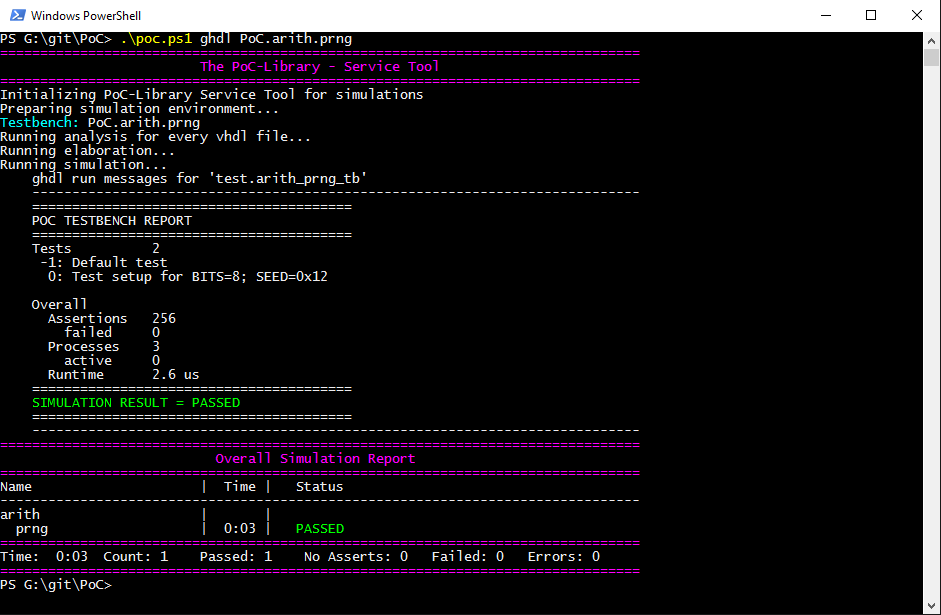
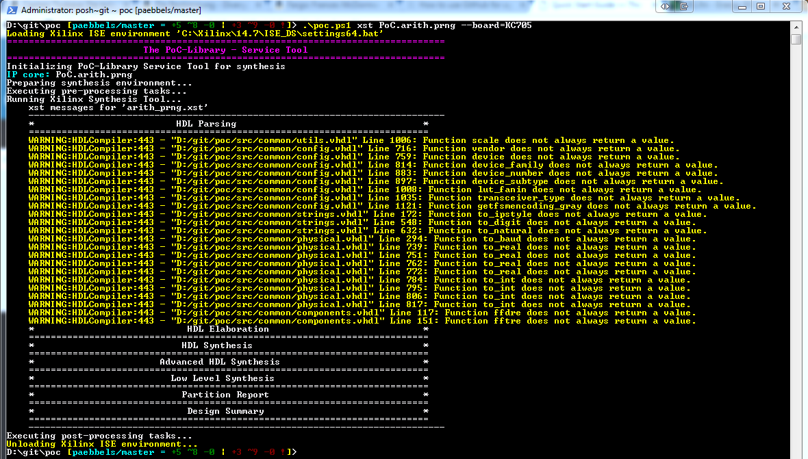

Quick Start Guide
This Quick Start Guide gives a fast and simple introduction into PoC. All topics can be found in the Using PoC section with much more details and examples.
Requirements and Dependencies
The PoC-Library comes with some scripts to ease most of the common tasks, like running testbenches or generating IP cores. PoC uses Python 3 as a platform independent scripting environment. All Python scripts are wrapped in Bash or PowerShell scripts, to hide some platform specifics of Darwin, Linux or Windows. See Requirements for further details.
PoC requires:
A supported synthesis tool chain, if you want to synthezise IP cores.
A supported simulator too chain, if you want to simulate IP cores.
The Python 3 programming language and runtime, if you want to use PoC’s infrastructure.
A shell to execute shell scripts:
Bash on Linux and OS X
PowerShell on Windows
PoC optionally requires:
Git command line tools or
Git User Interface, if you want to check out the latest ‘master’ or ‘release’ branch.
PoC depends on third part libraries:
OSVVM

Open Source VHDL Verification Methodology.
All dependencies are available as GitHub repositories and are linked to PoC as Git submodules into the PoCRoot\lib directory. See Third Party Libraries for more details on these libraries.
Download
The PoC-Library can be downloaded as a zip-file
(latest ‘master’ branch), cloned with git clone or embedded with
git submodule add from GitHub. GitHub offers HTTPS and SSH as transfer
protocols. See the Download page for further
details. The installation directory is referred to as PoCRoot.
Protocol |
Git Clone Command |
|---|---|
HTTPS |
|
SSH |
|
Configuring PoC on a Local System
To explore PoC’s full potential, it’s required to configure some paths and synthesis or simulation tool chains. The following commands start a guided configuration process. Please follow the instructions on screen. It’s possible to relaunch the process at any time, for example to register new tools or to update tool versions. See Configuration for more details. Run the following command line instructions to configure PoC on your local system:
cd PoCRoot
.\poc.ps1 configure
Use the keyboard buttons: Y to accept, N to decline, P to skip/pass a step and Return to accept a default value displayed in brackets.
Integration
The PoC-Library is meant to be integrated into other HDL projects. Therefore it’s recommended to create a library folder and add the PoC-Library as a Git submodule. After the repository linking is done, some short configuration steps are required to setup paths, tool chains and the target platform. The following command line instructions show a short example on how to integrate PoC.
1. Adding the Library as a Git submodule
The following command line instructions will create the folder lib\PoC\ and
clone the PoC-Library as a Git submodule
into that folder. ProjectRoot is the directory of the hosting Git. A detailed
list of steps can be found at Integration.
cd ProjectRoot
mkdir lib | cd
git submodule add https://github.com/VHDL/PoC.git PoC
cd PoC
git remote rename origin github
cd ..\..
git add .gitmodules lib\PoC
git commit -m "Added new git submodule PoC in 'lib\PoC' (PoC-Library)."
2. Configuring PoC
The PoC-Library should be configured to explore its full potential. See Configuration for more details. The following command lines will start the configuration process:
cd ProjectRoot
.\lib\PoC\poc.ps1 configure
3. Creating PoC’s my_config.vhdl and my_project.vhdl Files
The PoC-Library needs two VHDL files for its configuration. These files are used to determine the most suitable implementation depending on the provided target information. Copy the following two template files into your project’s source folder. Rename these files to *.vhdl and configure the VHDL constants in the files:
cd ProjectRoot
cp lib\PoC\src\common\my_config.vhdl.template src\common\my_config.vhdl
cp lib\PoC\src\common\my_project.vhdl.template src\common\my_project.vhdl
my_config.vhdl defines two global constants, which need to be adjusted:
constant MY_BOARD : string := "CHANGE THIS"; -- e.g. Custom, ML505, KC705, Atlys
constant MY_DEVICE : string := "CHANGE THIS"; -- e.g. None, XC5VLX50T-1FF1136, EP2SGX90FF1508C3
my_project.vhdl also defines two global constants, which need to be adjusted:
constant MY_PROJECT_DIR : string := "CHANGE THIS"; -- e.g. d:/vhdl/myproject/, /home/me/projects/myproject/"
constant MY_OPERATING_SYSTEM : string := "CHANGE THIS"; -- e.g. WINDOWS, LINUX
Further informations are provided at Creating my_config/my_project.vhdl.
4. Adding PoC’s Common Packages to a Synthesis or Simulation Project
PoC is shipped with a set of common packages, which are used by most of its
modules. These packages are stored in the PoCRoot\src\common directory.
PoC also provides a VHDL context in common.vhdl , which can be used to
reference all packages at once.
5. Adding PoC’s Simulation Packages to a Simulation Project
Simulation projects additionally require PoC’s simulation helper packages, which
are located in the PoCRoot\src\sim directory. Because some VHDL version are
incompatible among each other, PoC uses version suffixes like *.v93.vhdl or
*.v08.vhdl in the file name to denote the supported VHDL version of a file.
6. Compiling Shipped IP Cores
Some IP Cores are shipped are pre-configured vendor IP Cores. If such IP cores shall be used in a HDL project, it’s recommended to use PoC to create, compile and if needed patch these IP cores. See Synthesis for more details.
Run a Simulation
The following quick example uses the GHDL Simulator to analyze, elaborate and
simulate a testbench for the module arith_prng (Pseudo Random Number
Generator - PRNG). The VHDL file arith_prng.vhdl is located at
PoCRoot\src\arith and virtually a member in the PoC.arith namespace.
So the module can be identified by an unique name: PoC.arith.prng, which is
passed to the frontend script.
Example:
cd PoCRoot
.\poc.ps1 ghdl PoC.arith.prng
The CLI command ghdl chooses GHDL Simulator as the simulator and
passes the fully qualified PoC entity name PoC.arith.prng as a parameter
to the tool. All required source file are gathered and compiled to an
executable. Afterwards this executable is launched in CLI mode and its outputs
are displayed in console:
{kind=link}

Each testbench uses PoC’s simulation helper packages to count asserts and to
track active stimuli and checker processes. After a completed simulation run,
an report is written to STDOUT or the simulator’s console. Note the line
SIMULATION RESULT = PASSED. For each simulated PoC entity, a line in the
overall report is created. It lists the runtime per testbench and the simulation
status (... ERROR, FAILED, NO ASSERTS or PASSED). See
Simulation for more details.
Run a Synthesis
The following quick example uses the Xilinx Systesis Tool (XST) to synthesize a
netlist for IP core arith_prng (Pseudo Random Number Generator - PRNG). The
VHDL file arith_prng.vhdl is located at PoCRoot\src\arith and virtually
a member in the PoC.arith namespace. So the module can be identified by an
unique name: PoC.arith.prng, which is passed to the frontend script.
Example:
cd PoCRoot
.\poc.ps1 xst PoC.arith.prng --board=KC705
The CLI command xst chooses Xilinx Synthesis Tool as the synthesizer and
passes the fully qualified PoC entity name PoC.arith.prng as a parameter
to the tool. Additionally, the development board name is required to load the
correct my_config.vhdl file. All required source file are gathered and
synthesized to a netlist.
{kind=link}

Updating
The PoC-Library can be updated by using git fetch and git merge.
cd PoCRoot
# update the local repository
git fetch --prune
# review the commit tree and messages, using the 'treea' alias
git treea
# if all changes are OK, do a fast-forward merge
git merge
See also
- Running one or more testbenches
The installation can be checked by running one or more of PoC’s testbenches.
- Running one or more netlist generation flows
The installation can also be checked by running one or more of PoC’s synthesis flows.